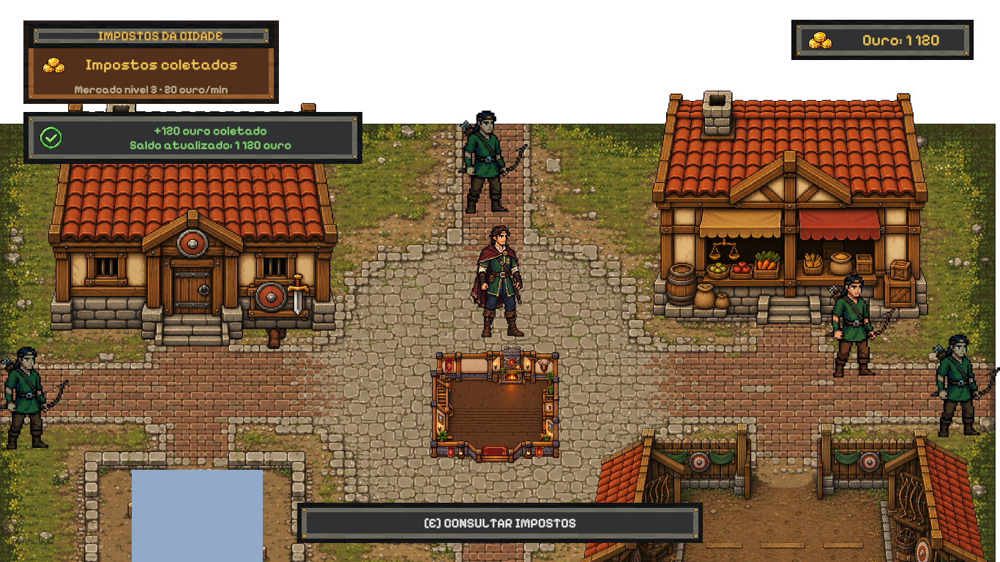

Centro — etapa 2: impostos e interações
A placa de impostos aparece quando o coletor é a interação próxima selecionada. Ela informa quanto pode ser coletado e a produção do Mercado, sem efetuar uma coleta nem gravar a partida.
A coleta continua em uma ação. O aviso oferece 3,5 segundos de leitura, fica oculto durante modais e retoma o tempo restante ao fechar. O saldo e a tecla de interação usam os componentes compartilhados já aprovados.
Etapa 2 aprovada pelo usuário. As quatro capturas foram preservadas como baseline visual da integração. O teste funcional passou (1/1) com partida em memória, incluindo crédito único, consulta sem gravação, estados vazios, pausa e expiração. O relatório da captura inicial mantém seu status histórico anterior à aprovação.
Entrega e validação · Relatório de capturas · Etapa 1
 Captura das peças de produção com dados fixos de revisão; a partida real fornece os valores durante o jogo.
Captura das peças de produção com dados fixos de revisão; a partida real fornece os valores durante o jogo.
Comparar a coleta com o protótipo aprovado

Protótipo aprovado.
Integração: placa e aviso do protótipo, com saldo e prompt compartilhados do jogo. Interações com ações distintas
Os edifícios mostram “Gerenciar Quartel”, “Gerenciar Mercado Local” e assim por diante. O edifício da Taverna mostra “Gerenciar Taverna”; a porta preserva “Entrar na Taverna”. O coletor oferece “Coletar impostos — X ouro” ou “Consultar impostos”, conforme o valor disponível.
Para testar no Centro, aproxime-se do coletor e pressione E. Sem Mercado ou sem impostos acumulados, a mesma ação explica o próximo passo. A interface não bloqueia o movimento.
A configuração local do HUD de ouro também foi normalizada: saldo visível no canto superior direito e apenas uma cópia ativa do painel. As áreas azuis do cenário foram preservadas.
A revisão final do conjunto — viagens, alertas e demais HUDs compartilhados — permanece na etapa 3.